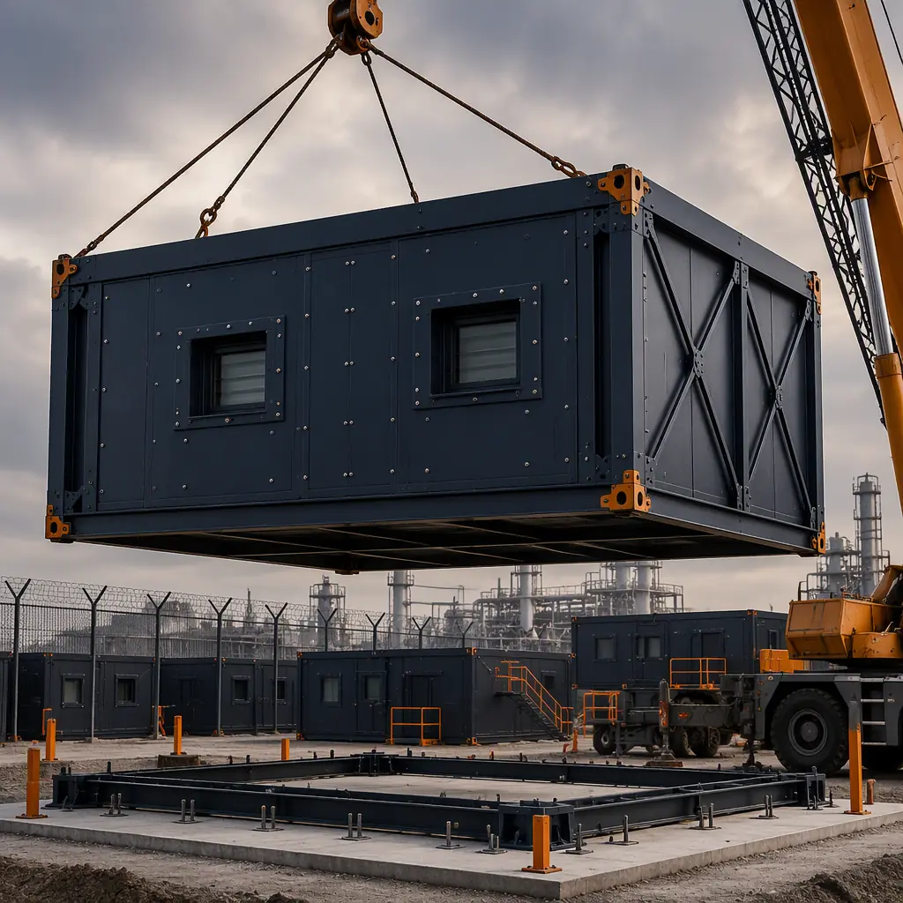
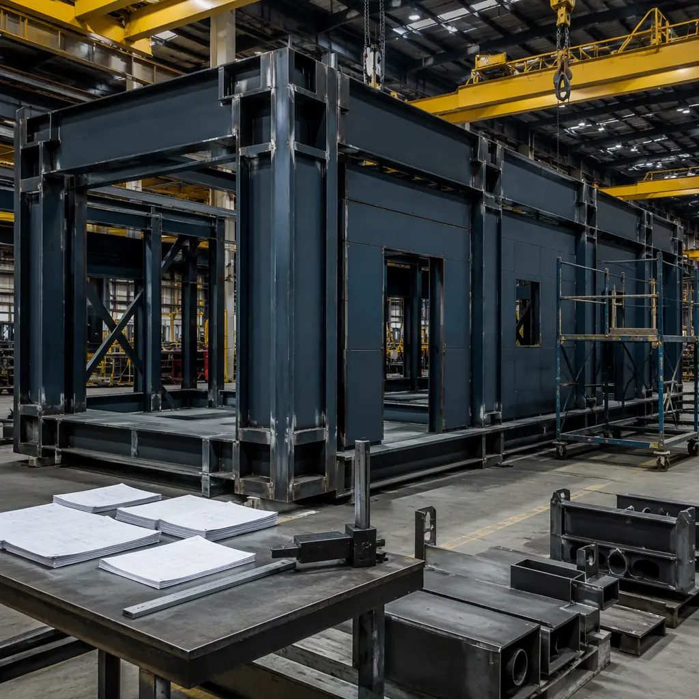
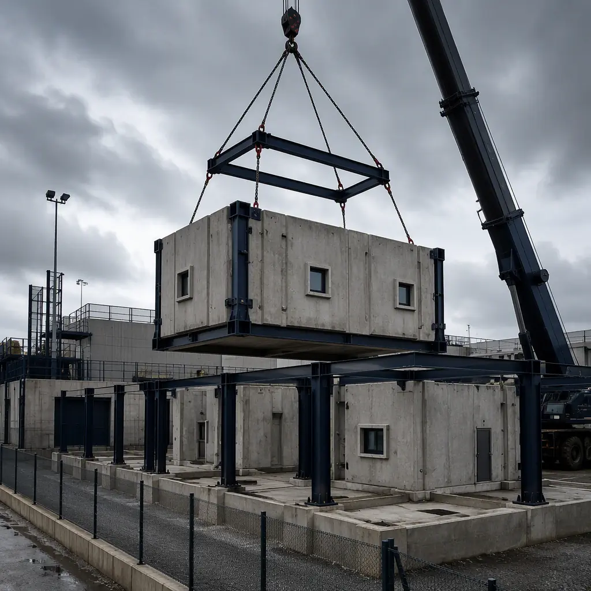
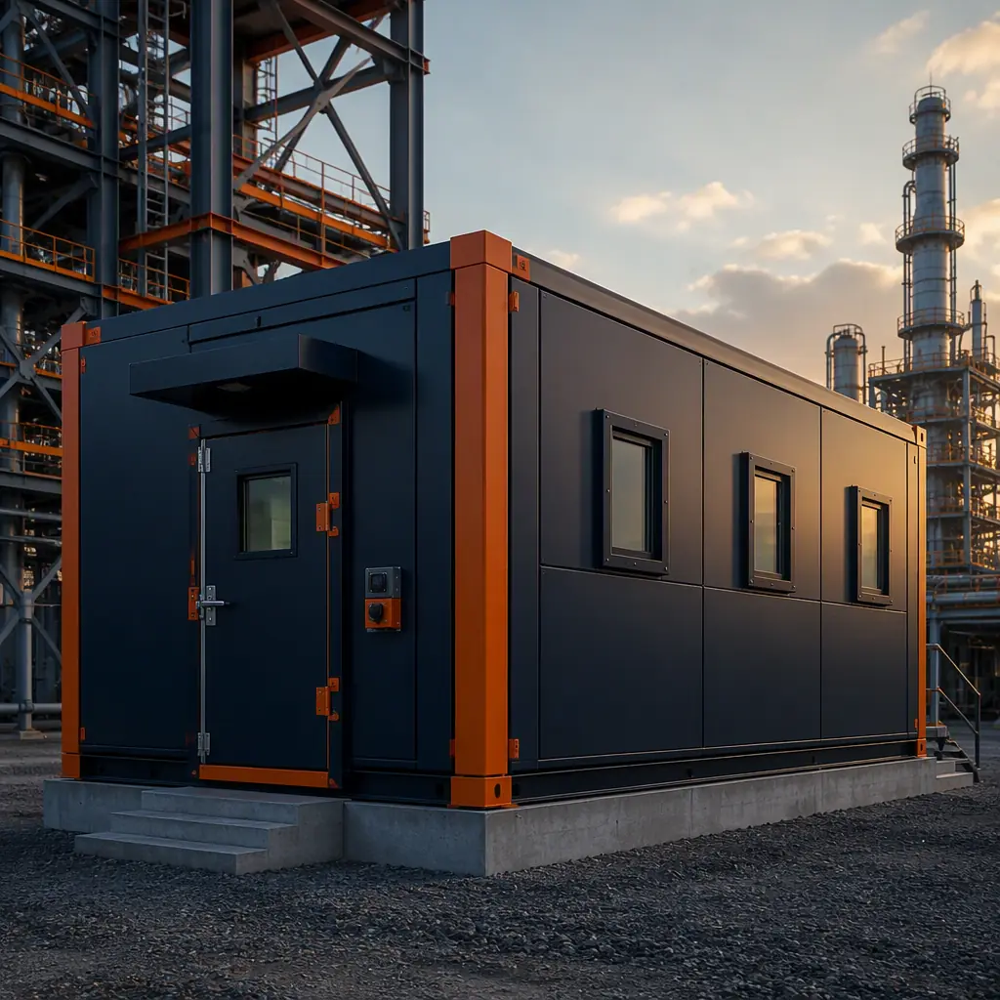

Blast-resistant buildings are a specialized category of protective construction used where an explosive event — accidental or intentional — is a credible threat: petrochemical plants, defense installations, government facilities, and critical infrastructure. The engineering challenge is severe: a building must absorb a pressure wave that arrives in milliseconds, remain standing, and protect its occupants from overpressure, fragmentation, and progressive collapse. Traditionally, blast-rated buildings were site-built, schedule-heavy, and expensive. Modular construction has changed that. A factory-built blast-resistant module — with a hardened steel frame, blast-rated wall and window systems, and certified connection detailing — can be engineered, fabricated, and delivered in 16–28 weeks, versus 12–24 months for conventional blast-rated construction. This guide covers the design standards that govern blast-resistant buildings, how factory production achieves certified blast ratings, and what defense, petrochemical, and government buyers should specify.

Blast Loads 101: Overpressure, Impulse, and What a Building Must Survive
A blast event generates a shock wave characterized by two quantities: peak overpressure (measured in pounds per square inch, psi) and positive-phase impulse (the area under the pressure-time curve, measured in psi-msec). Both matter, because structural response depends on how much energy the blast deposits and how fast. The table below shows the damage scale that blast design references:
| Peak Overpressure | Typical Effect | Design Relevance |
|---|---|---|
| 0.5–1.0 psi | Window glass breakage begins | Glazing hazard mitigation threshold |
| 1.5–3.0 psi | Glass shards become lethal; light structural damage | ISC Level A/B criteria zone |
| 3.0–6.0 psi | Steel frame distortion, wall panel failure | Typical petrochemical blast design range |
| 6.0–12.0 psi | Reinforced concrete and heavy steel damage | Hardened military and government facilities |
| > 12.0 psi | Severe structural destruction | Near-field events; survivable only with heavy hardened construction |
Most blast-resistant modular buildings are engineered for 2–10 psi peak overpressure at a specified standoff distance, using a single-degree-of-freedom (SDOF) dynamic analysis per UFC 3-340-02 or the ASCE 59-11 standard. The design is not about surviving a direct hit; it is about surviving a credible threat at a defined standoff, keeping occupants protected, and preventing progressive collapse. For an introduction to how hardened structures are engineered more broadly, our military and defense construction guide covers deployable and permanent defense facilities.
Where Blast-Resistant Buildings Are Required
The demand for blast-resistant modular buildings clusters in four sectors:
- Petrochemical and chemical processing. Control rooms, analyzer shelters, switchgear buildings, and emergency response centers located within process unit blast zones. API RP 752 and API RP 753 govern building siting and design for occupied buildings at refineries and chemical plants. A control room within a blast zone is typically designed for 2–8 psi with a 100+ year return period event.
- Defense. Security checkpoints, guard towers, communications shelters, and command facilities on active bases, designed to Unified Facilities Criteria (UFC) with multi-threat requirements including blast, ballistic, and forced entry.
- Government and critical infrastructure. Facilities near potential vehicle-borne or person-borne threats, designed to Interagency Security Committee (ISC) criteria with progressively higher protection levels (Level A through Level D).
- Energy and utilities. Substation control buildings, gas turbine enclosures, and LNG facility shelters where accidental explosion scenarios drive siting decisions.
For industrial owners evaluating blast-rated structures for process facilities, our heavy industrial modular construction guide covers chemical plant and refinery applications, including how blast-rated modules integrate with process piping and electrical infrastructure.
How Factory Production Achieves Certified Blast Ratings
Blast resistance is a property of the complete building system — frame, connections, wall panels, windows, doors, and roof — not of any single component. Modular construction achieves certified ratings because the entire system is fabricated and tested under factory control:
Hardened steel frames. Blast-resistant modules use heavy structural steel with thicker flange and web sections than standard modules. Where a standard commercial module uses columns sized for gravity and wind loads, a blast-rated module uses members sized by dynamic response analysis, with plastic hinge acceptance criteria that allow controlled deformation without collapse. The frame is welded on production jigs to ±2 mm tolerance, with complete joint penetration welds verified by ultrasonic testing per AWS D1.1 — the same weld quality that field blast construction struggles to achieve in overhead positions on site.
Blast-rated wall and roof panels. Exterior wall systems use sandwich panels with heavy-gauge steel facings (typically 14–10 gauge) and engineered core thickness, detailed with blast-rated connection clips that transfer the dynamic load into the frame. The panel-to-frame connection is the critical detail: field-built panels are often connected with standard fasteners that fail at blast loads, while factory-fabricated panels use certified blast-rated clips and fasteners whose capacity is documented in the design package.
Blast-resistant glazing and doors. Windows use blast-rated glazing — laminated glass or polycarbonate systems tested to ASTM F1642 — with frames anchored to the structure. Doors are blast-rated per ASTM F2927 or similar, with heavy-gauge frames and multi-point latching. In the factory, these components are installed with documented torque and anchorage verification, eliminating the field installation variability that undermines blast performance.
Connection detailing between modules. In a multi-module blast-rated building, the inter-module connections must transfer blast loads across the assembly without creating a weak link. Factory-controlled bolted connections with high-strength bolts and documented preload achieve the continuity that blast analysis assumes. For the quality management system behind this fabrication, our factory quality control guide details the inspection and documentation framework used on hardened MODURA projects.
Analysis and verification. Every blast-rated MODURA module is engineered with a documented design basis: the threat definition, a single-degree-of-freedom dynamic analysis of each critical component, and acceptance criteria expressed as maximum ductility ratios and support rotations. Where a governing standard requires component testing — glazing to ASTM F1642, doors to ASTM F2927, wall panels to ASTM E1886/E1996 — the test certificates are included in the design package. This verification trail is what allows a blast-rated module to be certified, inspected, and accepted without the ad-hoc field testing that conventional hardened construction often requires, and it is the documentation that third-party peer reviewers and authority having jurisdiction expect to see.

Design Standards: UFC, ASCE 59, ISC, and API
Blast-resistant modular buildings are engineered to the same standards as site-built hardened structures. The governing documents a buyer should reference in a specification are:
- UFC 3-340-02 (Structures to Resist the Effects of Accidental Explosions) — the primary design methodology for pressure-time history analysis, used for defense and government projects.
- ASCE/SEI 59-11 (Blast Protection of Buildings) — the civilian standard for blast-resistant design, including progressive collapse resistance per ASCE 7 and GSA criteria.
- ISC Security Design Criteria — protection level framework (Level A–D) for federal civilian facilities, specifying design basis threats, standoff distances, and glazing hazard levels.
- API RP 752 / RP 753 — siting and design of occupied buildings in petrochemical facilities, including blast consequence analysis and siting studies.
- UFC 4-010-01 (DoD Minimum Antiterrorism Standards for Buildings) — applies to Department of Defense facilities, including standoff-based siting requirements.
The modular manufacturer must document compliance with the specified standard through a design report that includes: the threat definition (charge weight, standoff, or pressure-time history), the SDOF or finite element analysis, component response criteria, and the test or certification basis for glazing, doors, and wall systems. Buyers should request this design package before award — a manufacturer that cannot produce a compliant blast design report cannot deliver a compliant building, no matter how heavy the steel. For government procurement context, our RFP and procurement guide explains how to specify performance-based criteria like blast ratings in solicitation documents.
Modular vs Conventional Blast-Resistant Construction
The decision between modular and conventional blast-rated construction is rarely about technical capability — both can achieve certified ratings — and almost always about schedule, cost, and site constraints:
| Dimension | Modular Blast-Resistant | Conventional Site-Built |
|---|---|---|
| Typical delivery timeline | 16–28 weeks | 12–24 months |
| Cost premium vs standard construction | 15–40% over standard modular | 25–60% over standard site-built |
| Site disruption | Minimal — 85–95% of work in factory | Full site construction, weather exposure |
| Weld quality | Factory AWS D1.1, 100% ultrasonic on CJP welds | Field welds, weather-dependent, sampled inspection |
| Relocatability | Can be re-deployed to new site | Permanent, demolition required for relocation |
| Working in live plants | Hot work in live process units requires extensive permitting |

The relocatability and live-plant advantages are decisive in practice. A refinery replacing an aging control room needs the new building operational before the old one is demolished, and needs to minimize hot work in a live process unit. A modular blast-rated control room is fabricated off-site, set in place over a weekend, and tied in during a planned turnaround. For the construction logistics of module delivery into congested industrial sites, our transportation and logistics guide covers route planning, permits, and crane operations for heavy modules.
Multi-Threat Design: Beyond Blast Alone
Hardened buildings are rarely blast-only. Defense and government specifications typically require a multi-threat design envelope:
- Ballistic resistance. Wall and glazing systems rated to UL 752 or NIJ standards (Level 3–8), with the blast-rated wall system doubling as the ballistic barrier.
- Forced entry resistance. Door and window assemblies rated to ASTM F1233 or UL 752 forced-entry levels, integrated with intrusion detection.
- Progressive collapse resistance. Ties and alternate load paths per ASCE 59 and GSA criteria, ensuring the removal of one module or one column does not cascade.
- Fire resistance. Blast-rated assemblies also carry fire ratings (1–4 hour), protecting occupants from secondary fire events — a dual requirement that our modular fire safety guide covers in detail.
- Seismic performance. In high-seismic regions, the hardened frame must also satisfy ductile detailing requirements — a combination addressed in our seismic design guide.
A blast-rated building is a system, not a material spec. The frame can be 50% heavier than standard and still fail at the window anchorage or the door frame if those components are not engineered as part of the same dynamic system. The factory advantage in blast construction is that the entire system — frame, panels, glazing, doors, connections — is fabricated and documented under one roof, by one quality system, with one design report behind it.
Specifying and Procuring a Blast-Resistant Modular Building
For buyers preparing to procure a blast-resistant modular building, the specification should include:
- Threat definition. Charge weight and standoff, or the governing pressure-time history. Ambiguity here makes compliant bids impossible to compare.
- Governing standards. UFC 3-340-02, ASCE 59-11, ISC level, or API RP 752/753, stated explicitly.
- Occupant protection level. The required response criteria — for example, "minor damage, no injuries" or "severe damage, life safety only" — which defines acceptable component response.
- Multi-threat requirements. Ballistic level, forced-entry rating, fire rating, seismic zone, and progressive collapse criteria.
- Deliverables. The blast design report, third-party peer review, material certifications, weld inspection reports, and glazing/door test certifications — all required before factory release.
- Site integration. Foundation anchorage design, module set sequence, and MEP tie-in scope, coordinated with the manufacturer's logistics team.
Industrial and government buyers should also evaluate the manufacturer's experience with the specific standard cited — a manufacturer with a portfolio of API RP 752 control rooms and a manufacturer with UFC 4-010-01 experience are serving different programs. For the broader evaluation framework, our partner evaluation guide provides a 10-point capability checklist aligned with what engineering, procurement, and security stakeholders require.
